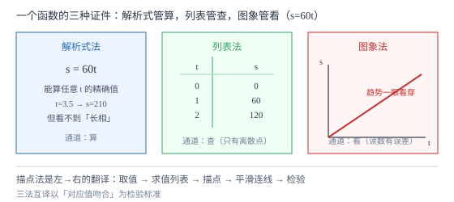

函数的表示
同一个函数有三种长相：解析式给公式、列表给样本、图象给全貌。三种表示不是三件事，是一件事的三种看法——会互相翻译，才算真的懂了函数。
| 所属主题 | 函数 |
|---|---|
| 所属模块 | 代数 |
| 课标学段 | 第四学段（7~9 年级） |
| 前置知识 | 函数的概念 |
| 核心素养 | 几何直观模型观念 |
教材定位
人民教育出版社《人教版（2024版）义务教育教科书·数学》
八年级下册第22章 函数22.2 函数的表示
对应八下 22.2 函数的表示。教材以气温变化、行驶里程等实例引出三种表示法；本篇把三种表示的「能看见什么、看不见什么」讲成对照，并给从解析式到图象的完整描点流程。
说明
常见的函数表示法有三种。解析式法：把 y 写成含 x 的式子，如 s=60t——信息最完整，能算出任何 x 对应的 y，但「长什么样」要看图才知道。列表法：列一张 x 与 y 的对应值表——数据一目了然，但只能给出有限个点，点与点之间发生了什么看不见。图象法：把每一对 (x, y) 画成坐标系里的点并连成线——趋势、最值、变化快慢一眼看穿，但从图上读出的数是近似的。
从解析式到图象走描点法，流程五步：①取值——在自变量取值范围内选若干个值（常取整数、间隔均匀）；②求值——逐个算出对应的 y，列成表；③描点——每个 (x, y) 画成一个点；④连线——用平滑曲线或直线依次连接（按 x 从小到大）；⑤检验——连线应顺滑不生硬，两端的点之外按趋势延伸或不延伸。
三种表示法对应三种考题：给解析式求值（代入）、给表格找规律（对比行列）、给图象读信息（看交点、看高低、看升降）。中考里「图象信息题」占比最大——图象不会直接告诉你公式，但横纵轴、起点终点、交点、拐点把函数的故事全写在上面。
使用场景
出租车计价、水电费阶梯价这类「分段收费」问题，图象法最有优势：每段一条线段，拐点就是计价规则切换处，列表法则要列一大串。
实验记录（如测温、测速）天然是列表法——仪器只能逐次读数；要预测没测的时刻，就得从表翻译出解析式或画出图象再延伸。
注意点
列表取值要在自变量取值范围内选，且间隔均匀才有代表性：表示 s=60t（0≤ t≤ 5）取 t=0,1,2,3,4,5 合理，取 t=0,0.01,0.02 则整张表挤在起点附近，看不出全程。
描点连线时不能把点画完就完了——「依次、平滑」两个词都要落实；跳着连、连成折线锯齿，都是把连续函数画成了别的样子（分段函数除外）。
从图象读数是近似值：读出「t=1.5 时 s\approx 90」要带约等号意识；若题目给了精确解析式，应以代入计算为准，图象只用来定性。
证明

图 1：函数的三种表示——解析式管「算」，列表管「查」，图象管「看」；描点法把左栏翻译成右栏
证明
结论 1三种表示法的信息量不同，选择哪一种取决于要回答什么问题。
问「t=2.7 时 s 是多少」：解析式一算即得 60× 2.7=162，列表里没有 2.7 这一行，图象读数只能估 160 上下——解析式赢。问「路程什么时候超过 150」：图象上画一条水平线 s=150 看交点立刻知道在 2.5 时之后；解析式要解不等式 60t>150，也可行但不如图直观。问「只记录了实验数据，没有公式」：列表是原始形态，其余两法都要从它翻译过来。三种表示各占一个生态位，没有万能的一种。
关键一步依据是三种表示分别把函数压缩到「算、查、看」三个通道。
结论 2描点法之所以能用有限个点确定整条曲线，靠的是函数变化的连续与规律。
取 s=60t 的 t=0,1,2 三点描出 (0,0),(1,60),(2,120)。为什么敢把中间连成线段？因为匀速行驶时每一小段时间内走过的路程成固定比例，t=1.5 时 s 必为 90，恰好落在连线中点——连线是对中间行为的预测，而预测被验算证实。若函数无规律可循（如随机数表），有限个点之间怎样连线都无依据。教材限定初中处理的函数（一次、二次、反比例等）都由解析式给出、变化连续，描点法因此有效。
关键一步依据是解析式给出的连续性与规律性；连线本质上是对点与点之间取值的插值预测。
结论 3列表、图象、解析式可以互相翻译，翻译的依据是「同一对应关系的不同载体」。
从表到式：观察 t=1 对 s=60、t=2 对 s=120，s 与 t 的比值恒为 60，猜 s=60t，再用 t=3 对 s=180 验证成立——从样本反推规律。从式到图：把若干 (t, s) 描点连线。从图到表：在图象上读若干点的坐标列成表。三条路都通，因为载体虽不同，记载的对应关系是同一个；翻译是否正确，用「对应值是否吻合」检验。
关键一步依据是三种表示记载同一对应关系；互译正确性的检验标准是取值吻合。
动手实验
用 y=2x 做一次完整描点：取 x=-2,-1,0,1,2，算出 y=-4,-2,0,2,4，在方格纸上描五个点并连线。然后用连线回答三个问题：①y=3 时 x 大约是多少（读图得 1.5）；②y=3 时 x 精确是多少（解 2x=3 得 1.5）；③两者一致吗。再把 x 轴、y 轴互换角色重看这张图，思考「同一个图象，横竖轴意义换了，它还是不是原来的函数」。亲手做一遍描点，比看十遍图都记得牢。
解题思路
拿到函数问题先问「给我的是哪种表示」，再问「问的是哪种表示上的特征」：求精确值→回解析式；看趋势最值→看图象；查特定点→查表或代入。对错了通道，会事倍功半。
画图象的取值清单：①范围端点要取到（能判断图象止于何处）；②对称的函数关于对称轴两侧对称取点（如 y=x^2 取 -2,-1,0,1,2）；③有拐点、转折的函数在转折处加密取点。
读图四查：一查坐标轴（横轴纵轴各是什么量、单位是什么）；二查起点终点（初始值与最终值）；三查交点（与 x 轴交点=函数值为零，与 y 轴交点=初始值）；四查升降（哪段增哪段减、哪段最陡=变化最快）。
按场景的例题
例 1（场景：行程与速度） 描点画行驶图象
汽车以 60 千米/时匀速行驶。①用列表法表示 s=60t（t 取 0 到 5 的整数）；②用描点法画出图象；③从图象上估计 t=3.5 时的路程，并用解析式验证。
解：①列表：t=0,1,2,3,4,5 对应 s=0,60,120,180,240,300。②五点描在坐标系中恰好排成一条过原点的直线，连接即得（匀速行驶的图象是射线状线段，t 只到 5）。③图象上 t=3.5 处纵坐标读数约 210；解析式验证 s=60× 3.5=210，完全一致（点恰在格点上）。验算：3.5 小时 = 3 小时 +\ 0.5 小时，180+30=210 ✓。
答：表见上；图象为过 (0,0) 到 (5,300) 的线段；t=3.5 时 s=210 千米。
例 2（场景：数据调查） 水箱注水记录
向空水箱匀速注水，每 2 分钟记录一次水量：第 2 分钟 8 升、第 4 分钟 16 升、第 6 分钟 24 升、第 8 分钟 32 升。①由表反推水量 V（升）与时间 t（分）的解析式；②第 5 分钟时水箱里大约多少升？三种表示法分别怎么回答？
解：①逐行算比值：8÷ 2=4，16÷ 4=4，24÷ 6=4，32÷ 8=4，比值恒为 4，故 V=4t（t≥ 0）。②解析式法：V=4× 5=20 升，精确；列表法：表里没有第 5 分钟，无法直接查；图象法：连线后读 t=5 处纵坐标约 20 升，近似。三法对照可见：反推公式后求值最精确，这正是「会翻译」的价值。验算：每分钟注 4 升，5 分钟注 20 升 ✓。
答：V=4t（t≥ 0）；第 5 分钟约 20 升（解析式精确、图象近似、列表查不到）。
例 3（场景：生活优化） 出租车计价图象
某市出租车计价：3 千米以内收 10 元（起步价），超过 3 千米后每千米加收 2 元（不足 1 千米按 1 千米算，本题按连续计费简化）。①写出车费 y（元）与行驶里程 x（千米，x>0）的关系；②画图象；③从图象上看车费 26 元大约跑了多远，并精确计算。
解：①分段：0<x≤ 3 时 y=10（水平段）；x>3 时 y=10+2(x-3)=2x+4（斜段）。②图象是两段：一条水平线段从 (0,10) 到 (3,10)，接着一条斜线从 (3,10) 向右上延伸，拐点在 (3,10)——拐点正是计价规则切换处。③26 元落在斜段：解 2x+4=26 得 x=11 千米。图象上从纵轴 26 画水平线交斜段再下垂到横轴，读数约 11 ✓。验算：11 千米 = 起步 3 千米加 8 千米，10+2× 8=26 ✓。
答：y=10（0<x≤ 3）；y=2x+4（x>3）；26 元对应 11 千米。
常用推论
列表法是图象法的离散版：把表格的行距取到无穷小、行数取到无穷多，点就连成了曲线。反过来，图象上任意一点的坐标都可以抄进表里。
分段函数的图象由几段拼成，段与段的接点（拐点）是信息最密集的地方——计价切换、状态转变都发生在拐点。
同一个图象，换横轴意义就是换函数：温度对时间的图与时间对温度的图，画出来可能长得完全不同——读图先读轴。
易错点
错描点后把各点用直线段首尾相连，连出锯齿状折线。
为什么错多数函数（一次、二次等）在点与点之间是平滑变化的，锯齿是把连续变化画成了跳变。
正确按 x 从小到大用平滑曲线依次连接；只有分段函数在段内才出现真正的直线段。
错列表取值只挑「好算的整数」，忘了取值范围端点。
为什么错端点决定图象从哪起、到哪止；漏掉端点，图象两头悬空，范围判断会出错。
正确在范围内取值且把端点取到，如 0≤ t≤ 5 时 t 取 0 和 5。
错从图象读出 t=1.5 时 s\approx 90，就直接当精确答案用。
为什么错图象读数受绘图精度限制，是近似值；除非交点恰在格点，否则都有误差。
正确有解析式时用代入求精确值，图象读数用于估计与验证。
直观理解
同一个函数像同一个人有三种证件照：解析式是身份证（信息全但全是数字编码），列表是通讯录（只登记了打过交道的几次），图象是监控录像（一举一动都在眼前，但要量身高得拿尺子在屏幕上比）。会用的人三份材料互相翻译：从录像里发现疑点，回身份证查底细，翻通讯录取证。